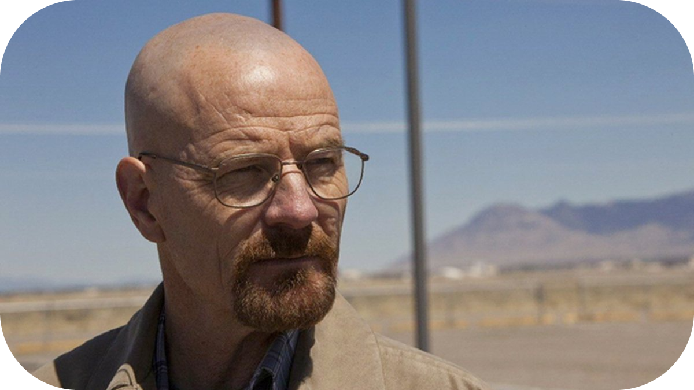

Walter White
Walter White, interpretado por Bryan Cranston, é o protagonista de Breaking Bad, uma das figuras mais complexas e icônicas da televisão. Inicialmente apresentado como um humilde professor de química do ensino médio em Albuquerque, Novo México, Walter enfrenta uma vida de frustrações e dificuldades financeiras. Ele trabalha em um emprego mal pago e luta para sustentar sua esposa, Skyler, e seu filho adolescente, Walter Jr., que tem paralisia cerebral.
A vida de Walter muda drasticamente quando ele é diagnosticado com câncer de pulmão em estágio avançado. Desesperado para garantir a segurança financeira de sua família antes de morrer, Walter decide usar seu conhecimento em química para fabricar metanfetamina. Ele se une a Jesse Pinkman, um ex-aluno problemático, e entra no mundo do tráfico de drogas.
Walter começa sua jornada com intenções aparentemente nobres, mas à medida que a série avança, ele se transforma em "Heisenberg", um impiedoso chefão do crime. Essa transformação revela as verdadeiras motivações de Walter: não apenas cuidar de sua família, mas também alimentar sua própria necessidade de poder, controle e reconhecimento. Ele se torna cada vez mais frio e manipulador, sacrificando relacionamentos e cometendo atos cada vez mais extremos para proteger seu império.
Walter é um personagem profundamente complexo, oscilando entre momentos de humanidade e ações moralmente condenáveis. Sua inteligência excepcional e habilidade para manipulação o tornam um adversário formidável, mas sua arrogância e ambição desenfreada acabam sendo sua ruína. Ao longo de Breaking Bad, ele é confrontado com as consequências devastadoras de suas escolhas, tanto para si mesmo quanto para aqueles ao seu redor.
Bryan Cranston recebeu inúmeros prêmios por sua interpretação de Walter White, incluindo múltiplos Emmys, e o personagem é frequentemente citado como um dos melhores já criados na história da televisão. Walter White personifica a luta entre moralidade e ambição, servindo como um lembrete sombrio das consequências de ultrapassar os limites éticos.